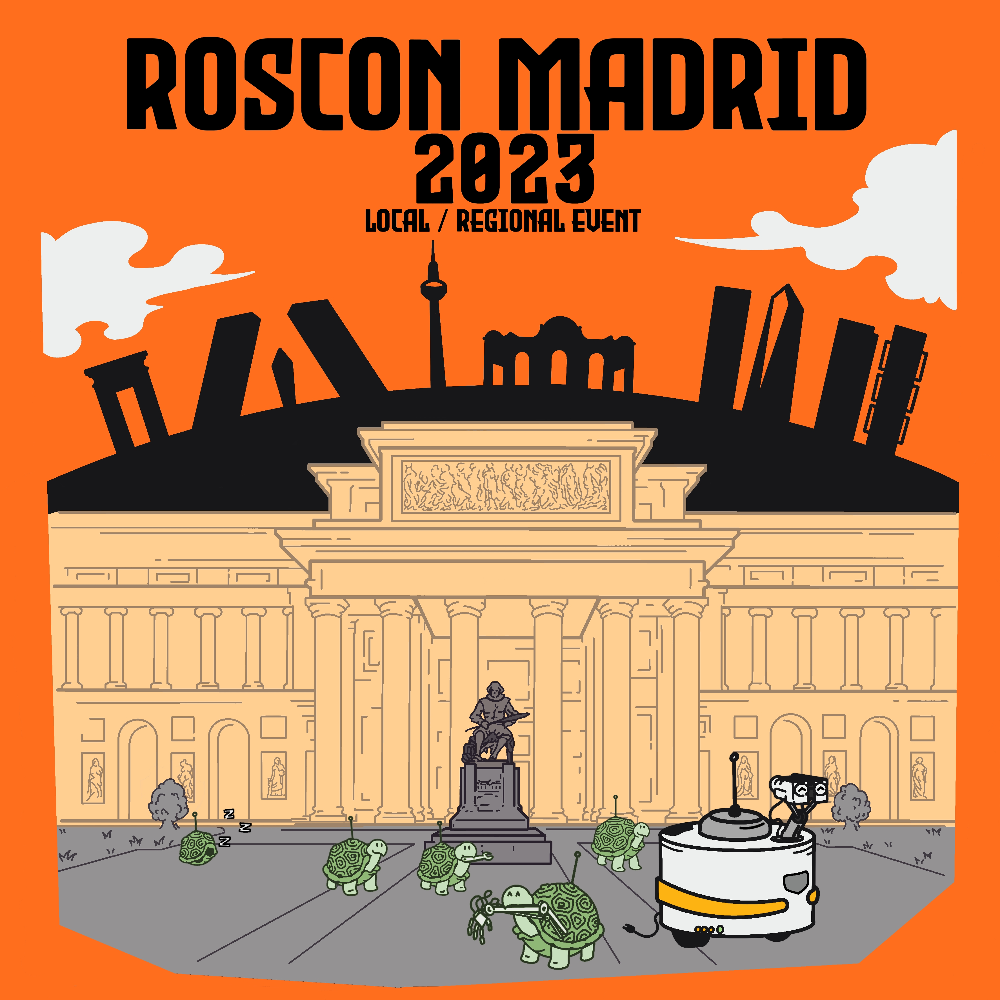

ROSConMadrid 2023 se celebrará en la URJC el 29 de septiembre de 2023. ROSCon Madrid 2023 es una oportunidad para que los desarrolladores de ROS de todos los niveles, desde principiantes hasta expertos, pasen un día extraordinario aprendiendo y trabajando en red con la comunidad de ROS. Obtenga consejos y trucos de expertos y conozca y comparta ideas con otros desarrolladores.
Esperamos que todos los asistentes sigan nuestra política.
Si tiene preguntas, inquietudes o ideas para Madrid 2023, comuníquese con el comité ejecutivo